Here is the part the other five vitals cannot offer. What makes the number worth training is that it is built out of trainable parts.
Resistance training
Legs and hips, loaded progressively. Muscle power is the engine of step length.
Brisk intervals
Short walks at a pace that feels purposeful, rehearsing a faster usual pace until it becomes the usual one.
Balance work
The confidence to commit fully to each step instead of guarding it.
Treat the brakes
Pain, vision problems, and foot problems quietly tax every meter. Fixing them is gait training too.
Then go back to the hallway and re-measure, in eight to twelve weeks, same course, same instructions, same steady middle. One honest limit, stated as plainly as the rest of this chart: training improves speed and function, and that is reason enough. Whether deliberately raising gait speed extends life is not established, and this essay will not pretend otherwise. The survival data in Row 02 are an association, in adults 65 and older, and association is not causation.
The chart is still open, and the stopwatch is in your pocket. Four meters, usual pace: go take the sixth vital again.
Bohannon RW, Andrews AW. Normal walking speed: a descriptive meta-analysis. Physiotherapy. 2011;97(3):182 to 189. DOI 10.1016/j.physio.2010.12.004. PMID 21820535. Meta-analysis of 41 articles and 23,111 healthy subjects; pooled means ran from 143.4 cm/s (men, 40 to 49 years) down to 94.3 cm/s (women, 80 to 99 years). ↩
Provenance of the decade table, stated plainly: the 2011 paper is paywalled, so the seven per sex means plotted here are as reproduced by two independent secondary sources that cite the paper directly and agree with each other and with the abstract endpoints (the University of Toronto iWalk clinical resource, and howlongtowalk.org). The four oldest decade values are independently corroborated by a third, peer reviewed source: BMC Geriatrics, DOI 10.1186/s12877-015-0031-2, which reports the same Bohannon 2011 values, 1.26 and 1.13 m/s at 70 to 79 years and 0.97 and 0.94 m/s in the oldest stratum (printed there as 80 to 89; the table here keeps the spec label 80 to 99). No percentile appears anywhere in this essay: the per decade standard deviations needed to compute one could not be recovered from open sources, and a percentile without a spread would be invented. The chart shows position against the mean and the clinical bands, nothing more. ↩
Studenski S, Perera S, Patel K, et al. Gait speed and survival in older adults. JAMA. 2011;305(1):50 to 58. DOI 10.1001/jama.2010.1923. PMID 21205966. Pooled analysis of nine cohort studies, 34,485 community dwelling adults aged 65 and older. The sample was 79.8% white and community dwelling, so the estimates may not travel unchanged to every population. ↩
Abellan van Kan G, Rolland Y, Andrieu S, et al. Gait speed at usual pace as a predictor of adverse outcomes in community dwelling older people: an International Academy on Nutrition and Aging (IANA) Task Force report. The Journal of Nutrition, Health & Aging. 2009;13(10):881 to 889. DOI 10.1007/s12603-009-0246-z. ↩
Fritz S, Lusardi M. Walking speed: the sixth vital sign. Journal of Geriatric Physical Therapy. 2009;32(2):46 to 49. The framing this essay is built on: walking speed as an integrated measure of system performance, with cutoffs indicative of specific outcomes. ↩
The clinical bands converge from several independent literatures, including the EWGSOP sarcopenia criteria, community ambulation and street crossing requirements, and fall risk screening reviews. They are zones for thinking, not bright lines from a single trial: a walker at 0.79 m/s and a walker at 0.81 m/s are, for practical purposes, the same walker. ↩
Animations: the walkers and joint traces in Rows 03 and 05 are illustrative, produced by stylized angle functions drawn to classic clinical descriptions and standard PM&R teaching. They are not motion capture data and not patient recordings. Speed in Row 03 is the definitional identity: speed in meters per second equals cadence (steps per minute) times step length (meters per step), divided by 60. ↩
What this chart can and cannot say
Methods in one paragraph. The self-test times a flying four meters: a marked segment inside a longer walk, so the watch runs only while you are already at your usual pace, matching the steady-state conditions under which the normative values were measured. The pooled research cohorts timed short, usual-pace walks under standardized conditions, with protocols that varied between studies; a home hallway result is an everyday estimate, not that standardized measurement, and a helper’s reaction time, your surface, and your shoes all move it. The survival figures describe groups of adults 65 and older, not forecasts for any individual, and they describe association, not cause. This essay teaches a measurement and the reasoning around it. It is not a diagnosis: a walk that is changing, or hurting, deserves a clinician in the room, not a chart on a phone.
Formulary No. 12 · The Prophylaxis Shelf
The Formulary Shelf
Nine ways to keep a still leg from clotting, shelved like a formulary. Pick a patient; every label on the shelf is rewritten for that patient.
By a PM&R resident physician
Every hospital faces the same quiet problem. A patient stops moving: after a fracture, a stroke, a cord injury, a long admission. Blood that stops moving starts to clot, and the answer is a shelf of countermeasures: injections, pills, pumps, one famous pair of stockings. Each has a record, set against a specific kind of patient. Change the patient and the risk changes completely.
This essay is a formulary shelf. Pick the patient at the top, and every bottle below is relabeled for that patient: the risk with nothing on board, the risk on that agent, the trial behind the number. The clots are real, and where the numbers turn deadly they are presented straight, in the panel below.
The shelf itself: rows of bottles, each one the right answer for somebody and the wrong one for somebody else. Photo: Ivan S / Pexels.
First
The baseline risk
Before any drug: how often legs clot when nobody does anything to stop it.
Risk of deep vein thrombosis with no prophylaxis at all
The older studies scanned or injected dye in everyone, symptoms or not, so they count mostly silent clots. Modern wards, mobilizing early and covering routinely, see far fewer clots a patient can feel. Both are true; every line below is tagged by which kind of number it is.
Patient
DVT, untreated
Source
Major trauma
58% (18% proximal)
Geerts et al., NEJM 1994, n=349, venography Screening
Spinal cord injury
47 to 100% (pooled 62%)
Review and meta-analysis, Arch Phys Med Rehabil 2023 Screening
Hip or knee replacement, hip fracture
40 to 60%
ACCP-era summary table (Geerts et al.) Screening
Acute stroke
20 to 50%
ACCP-era summary table Screening
General medical inpatient
10 to 20% (14.9% in trial placebo arm)
ACCP table; MEDENOX, NEJM 1999 Screening
ICU patient
10 to 80%, population dependent
ACCP-era summary table Screening
What a clot can cost. A clot that breaks loose and reaches the lungs can kill, in exactly the patients on this shelf. Without prophylaxis, fatal pulmonary embolism followed hip fracture surgery in roughly 2.5 to 7.5% of patients in classic series.
In the PEP trial (Lancet 2000), 13,356 hip fracture patients received aspirin or placebo. Forty-three people in the placebo group died of pulmonary embolism; eighteen in the aspirin group. That difference, 25 funerals, is why the bottles below exist. It is the last time in this essay that death is given a number without a joke anywhere near it.
The label
How to read this shelf
Every bottle carries the same label, written for the patient selected above. The key below defines each field on it.
Patient tabs
The seven patient types at the top of the shelf. Pick one; every label below is rewritten for that patient.
Clot risk
The share of patients who clotted in the trial, with no treatment and on that drug: 31% means 31 of 100 patients clotted.
Evidence
The line under the risk, naming the trial behind the number.
NNT chip
The black chip: how many patients to treat for one fewer event, computed from the trial's own rates.
Verdict stamp
The bottom line for that bottle and that patient: best evidence, reasonable choice, weak evidence, not recommended, or no data.
Screening vs symptomatic
Screening counts silent clots found by imaging everyone; symptomatic counts clots patients felt. Screening runs 5 to 20 times higher; never compare across tags.
Second
Pick a patient, then read the shelf
Every bottle underneath is relabeled the moment you change the patient, because in this literature the patient is most of the story. Every cell also carries an evidence tag, screening or symptomatic: clots found on scheduled scans, or clots patients actually felt. The two kinds stay in their labeled lanes and are never averaged into one league table.
Formulary No. 12Seven patients, one shelf
Clinical picture ·
What the evidence can support
Tap “Compare evidence” on any bottle to add it here for the patient selected above. The tray lines your picks up against the evidence: what covers, what does not belong, what is missing. It writes no prescription.
Nothing compared yet.
Third
Head to head
Three head-to-head trials shape this shelf more than everything else combined. Each bar is a percentage of patients; shorter is better.
Verdict · A tie where it matters most: death and PE identical, aspirin noninferior on the primary outcome. Enoxaparin takes DVT by 0.8 points (NNT about 125), nearly all below-knee clots. Whether one is worth 125 patients' worth of injections is the argument this trial started, not settled.
The aspirin paradox, elective joint replacement
CRISTAL · JAMA 2022 · n=9,711, stopped early | EPCAT II · NEJM 2018 · n=3,424 (rivaroxaban 5 days, then aspirin 81 mg once daily) Symptomatic
First trial · aspirin from day zero vs enoxaparin (CRISTAL)
Aspirin 100 mg dailyEnoxaparin 40 mg daily
Sympt. VTE, 90 d
3.45 vs 1.82%
Second trial · aspirin as step-down after 5 days of rivaroxaban vs continued rivaroxaban (EPCAT II)
Aspirin 81 mg once daily (step-down)Rivaroxaban throughout
Sympt. proximal VTE
0.64 vs 0.70%
Verdict · Same drug, different start. As a day-zero solo act, aspirin lost clearly, and the trial was stopped early because of it. As the second phase after five days of rivaroxaban, aspirin 81 mg once daily matched it. Aspirin's early gap cannot be pinned on the first five days by this pairing: the two designs differ in more than timing (different comparators, populations, and eras). What they show is narrower, and it is enough: aspirin from day zero underperformed in CRISTAL, and aspirin after a five-day rivaroxaban lead-in held even in EPCAT II.
Dalteparin 5,000 IU dailyUFH 5,000 units twice daily
Proximal DVT
5.1 vs 5.8%
PE
1.3 vs 2.3%
HIT
0.3 vs 0.6%
Verdict · Dalteparin’s proximal-DVT rate was not significantly lower (5.1 vs 5.8%), while PE, a secondary outcome, was lower (1.3 vs 2.3%; hazard ratio 0.51, NNT about 100). A significant secondary outcome beside a nonsignificant primary one is a pattern to report, not a mechanism: it does not by itself prove the drug prevents emboli by a route that bypasses leg clots, and sampling variation and the blind spots of ultrasound sit on the list of ordinary explanations.
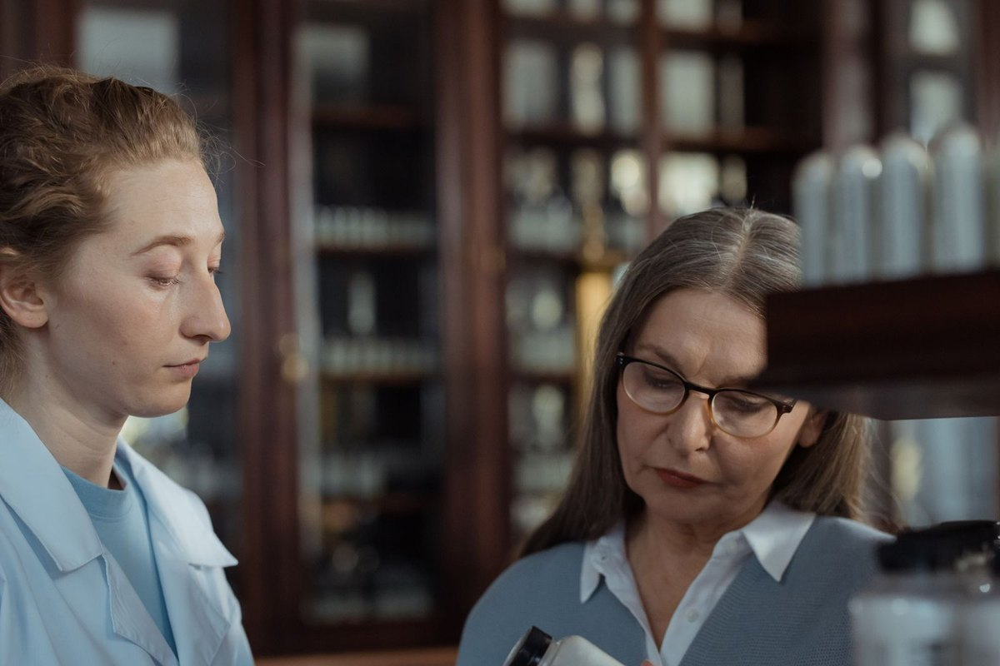
Behind every pick is a person making it: a pharmacist talks a patient through one plain white bottle. Photo: cottonbro studio / Pexels.
Behind the counter
Why the surgeon reaches for that bottle
The shelf shows what the trials found, not why a hand reaches for a particular bottle. That runs on three things no trial randomizes: the harm the surgeon can see, the schedule the day allows, the default the order set chose. Pinned behind the counter, service by service, are the reasons.
Arthroplasty · the aspirin habit
The harm you can see beats the clot you cannot
The first reasons are practical: aspirin is a pill. No injection to teach, no monitoring, low price, and patients do not quietly stop taking it at home. A Bone & Joint Journal review adds the operating room's reason: aspirin is milder, less likely to fill the wound with blood.
A hematoma is the complication the surgeon meets again: at the wound check, on the return trip to theatre, in drainage that will not stop, each a step toward an infected prosthesis. The clot aspirin misses is the opposite: silent, below the knee. The whole CRISTAL gap was below-knee DVT; EPCAT II showed aspirin matching rivaroxaban once the stronger drug had covered the first five days; the AAOS guideline names no best agent. Between a harm you can see and one you mostly cannot, the hand reaches for the pill.
Trauma · early LMWH, lingering UFH
Start early, and keep a short leash in the drawer
Trauma runs the other way: the clot is common, proximal, lethal, and the data keep dragging the first dose earlier. A large registry analysis puts delay at roughly 1.5% higher VTE risk per hour of the first 24; in blunt solid organ injury, starting within 48 hours cut VTE from 7% to 3%, no extra bleeding failures. EAST guidance and the Western Trauma Association algorithm both land on LMWH once bleeding allows.
The counterweight is bleeding the surgeon can watch happen: an intracranial hemorrhage expanding on the next scan. For TBI needing neurosurgery, no guideline settles the timing, the evidence is not there, and the call is judgment, in the middle of the night. Which is why UFH keeps its drawer in the trauma bay: not cleared by the kidneys, so it survives renal failure; quick to wear off and reversed by protamine, so it survives the trip back to theatre. Not nostalgia: a short leash for short-notice problems.
Spine and neurosurgery · the ASRA clock
The dose waits for the catheter
On a spine list, the complication that governs the shelf is not in the legs. A spinal epidural hematoma is a small bleed in a closed bony canal beside the cord, counted as a permanent deficit with the surgeon's name on it. That fear has a timetable, written by the ASRA consensus (fifth edition, 2025), and the clock runs on dose, not on how many times a day the syringe comes. Before a needle or catheter goes in: at least 12 hours after a low-dose (prophylactic) LMWH dose, at least 24 hours after a high-dose (treatment) dose. Twice-daily prophylaxis is still low-dose; its first postoperative dose waits until the following day and at least 12 hours after placement, and an indwelling catheter comes out before that regimen starts. With once-daily prophylaxis the catheter may stay in, comes out 12 hours after the last dose, and the next dose waits at least 4 hours after removal. Fondaparinux runs on a longer clock: held 36 to 42 hours before needle placement at the prophylactic dose, with any catheter removed at least 6 hours before its first postoperative dose.
Read as a dosing schedule, the behavior explains itself: doses are held not from neglect but from arithmetic, and every held dose is one the patient never gets back. On this service the clock, not the clot, runs the shelf.
Hip fracture · the long tradition
Old operation, long cover
Hip fracture is where this shelf was built, and its habits are old for a reason. PEP randomized more than 13,000 hip fracture patients in 2000, and aspirin alone cut fatal PE deaths from 43 to 18: even the mildest agent here is a serious drug. PENTATHLON gave fondaparinux a clean win over enoxaparin on scan-detected clots, and the service has trusted long, early cover ever since.
The calendar explains it: immobility starts at the fall, surgery follows fast because delay is its own danger, and the patient is older, anemic, slow to get moving. NICE answers with a month of LMWH, fondaparinux if the bleeding balance tips that way. For this patient the argument is rarely which bottle; it is whether cover started around the operation and survived discharge.
Discharge · the DOAC question
The best bottle is the one that gets taken
At the discharge desk the contest changes: whatever won on the ward has to survive a kitchen table. A once-daily pill needs no injection teaching, no nurse visits, no monitoring, and ASH 2019 suggests a DOAC over LMWH after joint replacement largely on convenience.
The same desk keeps the refusals. Kidneys narrow the shelf: fondaparinux is contraindicated below a creatinine clearance of 30, enoxaparin accumulates below 30, the DOACs carry their own renal restrictions. Cost and prior authorization push back toward a syringe or an aspirin bottle. Reversal is lopsided too: protamine has unwound heparin for decades, fondaparinux has no reversal agent at all, and DOAC reversal, where it exists, is newer, costlier, far less rehearsed. Convenience wins only when the kidneys, the wallet, and the bleeding plan all agree.
Every service · the order set
The default is the decision
Most prophylaxis is never actively chosen. It arrives pre-checked in an admission order set, at a default drug, dose, and hour, and runs until something interrupts it: a procedure window, a transfer, a refused injection. The failure data fit that picture exactly: in the trauma missed-dose study, patients who missed enoxaparin doses developed DVT at 23.5%, against 4.8% when every dose landed; in rehab, prophylaxis was dropped at medication reconciliation in 14.2% of stroke and brain injury transfers, stopped by default rather than by decision.
The famous preferences, aspirin versus enoxaparin, one DOAC versus another, are real. But they are the small print. The headline is the default: whatever the order set says is what the patient gets, until somebody chooses otherwise.
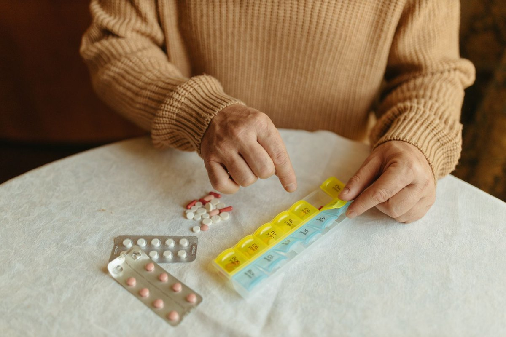
Where every hospital order ends up: a kitchen table, a weekly pill organizer, and a schedule somebody has to keep. Photo: Yaroslav Shuraev / Pexels.
Last
The order that never reaches rehab
Every trial above ends at discharge or at a fixed day count; rehabilitation starts there. What happens to prophylaxis when the patient changes buildings is the least studied question on the shelf, and the one most squarely in PM&R's lane.
The order never arrives
The acute hospital writes the order. Then the patient transfers, the medication list is reconciled by hand, and the order quietly fails to make the trip. Not a rare clerical slip: it has been measured three different ways.
14.2%
of stroke and brain injury patients arriving at one inpatient rehabilitation facility had their prophylaxis inappropriately dropped during transfer medication reconciliation. Heparin products were dropped most often.
clots that developed after admission to SCI rehabilitation occurred after prophylaxis had already been stopped. In the same cohort, 21% of patients got no prophylaxis during rehab at all, usually because a clinician judged their mobility good enough.
Bluvshtein et al., NeuroRehabilitation 2023 (n=685)
5 of 8
clots diagnosed during SCI rehabilitation had actually formed in acute care and were only detected at transfer. With prophylaxis continued, the risk of a genuinely new clot during rehab was about 2.0%.
Eichinger et al., PLoS ONE 2018 (n=185)
The receiving end is not imagining it: screening finds a DVT already present in 8.6% of brain injury patients and 13.2% of stroke patients on arrival at rehabilitation. The risk window outlasts the building: about three quarters of symptomatic clots after hip replacement are diagnosed after discharge. Yet there is no randomized trial of prophylaxis in a rehabilitation facility, no rehab-specific guideline, and no study linking the scores rehab runs on (the FIM, the Berg Balance Scale) to who clots; one stroke cohort found balance scores the closest predictor anyone has. The summary: rehab prophylaxis runs on extrapolation, clinician judgment, and a handoff that fails about one time in seven. The order, most days, simply never arrives.
Fine print that matters
Screening endpoints set the numbers: approvals and guideline grades rest heavily on venographic trials counting silent clots, which occur 3 to 10 times more often than symptomatic events. A bottle can look dominant on the shelf and merely equal at the bedside.
Anti-Xa titration did not survive contact with a big cohort. Adjusting enoxaparin doses to blood levels sounded right and failed: VTE 6.0% on fixed dose vs 6.8% adjusted (Karcutskie et al., JAMA Surgery 2018, n=792).
IVC filters split the guidelines. In the one modern trial (Ho et al., NEJM 2019, n=240), filters caught emboli (PE 0.8% vs 5.1%) without improving the composite outcome; ACCP says do not place them prophylactically, EAST says consider them in the highest-risk trauma patients who cannot be anticoagulated.
SCI duration is the widest disagreement on the shelf. Published guidance spans roughly 30 days to 24 weeks. One caution: the exact NICE wording on SCI duration is flagged UNVERIFIED in the research memo, so this essay cites the spread, not the quote.
No DOAC has earned the SCI shelf. The memo is explicit: there is no adequate trial evidence for DOAC prophylaxis after spinal cord injury, whatever arthroplasty practice says.
Sources
Geerts WH, et al. Prevention of venous thromboembolism in major trauma (no prophylaxis cohort), NEJM 1994; and low molecular weight heparin vs unfractionated heparin in trauma, NEJM 1996.
Samama MM, et al. MEDENOX: enoxaparin in acutely ill medical patients, NEJM 1999.
Pulmonary Embolism Prevention (PEP) Trial Collaborative Group. Aspirin after hip fracture, Lancet 2000.
Eriksson BI, et al. PENTATHLON: fondaparinux vs enoxaparin after hip fracture surgery, NEJM 2001; extended fondaparinux prophylaxis, Arch Intern Med 2003.
Cohen AT, et al. ARTEMIS: fondaparinux in older medical patients, BMJ 2006. Cohen AT, et al. ENDORSE study, Lancet 2008.
Bjornara BT, et al. Timing of symptomatic VTE after arthroplasty and hip fracture surgery, J Bone Joint Surg Br 2006.
Sherman DG, et al. PREVAIL: enoxaparin vs UFH in acute ischemic stroke, Lancet 2007.
RECORD 1 and RECORD 3 (rivaroxaban vs enoxaparin in arthroplasty), NEJM 2008; RECORD 4, Lancet 2009.
CLOTS Trials Collaboration. CLOTS 1 (stockings in stroke), Lancet 2009; CLOTS 3 (intermittent pneumatic compression in stroke), Lancet 2013.
Hull RD, et al. EXCLAIM: extended enoxaparin after acute medical illness, Ann Intern Med 2010.
Cook D, et al. PROTECT: dalteparin vs UFH in critical illness, NEJM 2011. Goldhaber SZ, et al. ADOPT: apixaban vs enoxaparin, NEJM 2011.
Cohen AT, et al. MAGELLAN: rivaroxaban vs enoxaparin in medical patients, NEJM 2013.
Louis SG, et al. Missed enoxaparin doses and DVT, JAMA Surgery 2014.
Anderson DR, et al. EPCAT II: aspirin vs rivaroxaban after arthroplasty, NEJM 2018. Spyropoulos AC, et al. MARINER: rivaroxaban after discharge, NEJM 2018. Karcutskie CA, et al. Anti-Xa guided dosing, JAMA Surgery 2018.
Ho KM, et al. Early prophylactic IVC filters in severe trauma, NEJM 2019.
Shalhoub J, et al. GAPS: graduated compression stockings as an adjunct to LMWH, BMJ 2020.
Sidhu VS, et al. CRISTAL: aspirin vs enoxaparin after hip or knee replacement, JAMA 2022.
Major Extremity Trauma Research Consortium. PREVENT CLOT: aspirin vs LMWH after fracture surgery, NEJM 2023.
Eichinger S, et al. VTE during SCI rehabilitation, PLoS ONE 2018. Bluvshtein V, et al. VTE prophylaxis in SCI rehabilitation, NeuroRehabilitation 2023. Zhang J, Komargodski O, McElroy A, Echaide C. Inpatient rehabilitation transfer medication reconciliation study, Cureus 2022, article e23134.
Reviews and guidelines consulted via the research memo: ACCP antithrombotic guidelines (Chest 2012); ASH guidelines (Blood Advances 2018, 2019); NICE NG89; EAST practice guidance and the Western Trauma Association algorithm; Arch Phys Med Rehabil 2023 (SCI thromboembolism review); Ann Surg 2022 (LMWH vs UFH in trauma, meta-analysis).
Kopp SL, et al. Regional anesthesia in the patient receiving antithrombotic or thrombolytic therapy: ASRA evidence-based guidelines, 5th edition, Reg Anesth Pain Med 2025 (the neuraxial timing windows in the behind-the-counter section).
American Academy of Orthopaedic Surgeons. Clinical practice guideline on preventing venous thromboembolic disease in elective hip and knee arthroplasty (agent choice left open; aspirin accepted for standard-risk patients in AAOS educational materials, via the research memo).
Aspirin and the prevention of venous thromboembolism following total joint arthroplasty: commonly asked questions. Bone & Joint Journal 2017;99-B(11) (oral dosing, cost, no monitoring, and the wound hematoma reasoning).
Rig No. 13 · Neurogenic Bladder in Spinal Cord Injury
The Bladder Loses Its Instructions
The bladder works like a switch. It has two settings: store urine, or let it out (void). There is nothing in between. A spinal cord injury does not damage the bladder itself. It cuts the wires that run the switch. Doctors call this neurogenic bladder: a bladder problem caused by nerve damage, not by damage to the bladder. This essay rebuilds the whole system as a machine you can run. Pick where the cord is injured, watch the pressures, zoom into the bladder wall, and plug in the treatments one at a time.
By a PM&R resident physician
In a healthy body, the pons is the switch operator. The pons is a control center in the brain stem. As the bladder fills, it stretches, and signals travel up the spinal cord. The pons (its full name is the pontine micturition center, the brain's urination center) holds the brake until it is safe to void. Then it sends two orders at once: detrusor, squeeze; sphincter, relax. The detrusor is the bladder muscle that does the squeezing. The sphincter is the ring of muscle that acts as the gate out of the bladder. Storing is the opposite job. It is run from the lower chest level of the cord (the lower thoracic cord): sympathetic signals (the body's storage signals) relax the detrusor and close the bladder neck, while the pudendal nerve keeps the outer gate (the external sphincter) switched on, all the time.
Cut the cord, and the bladder itself does not change. What changes is who gives the orders. That depends entirely on where the cord is cut. So this essay starts with a machine, not a paragraph.
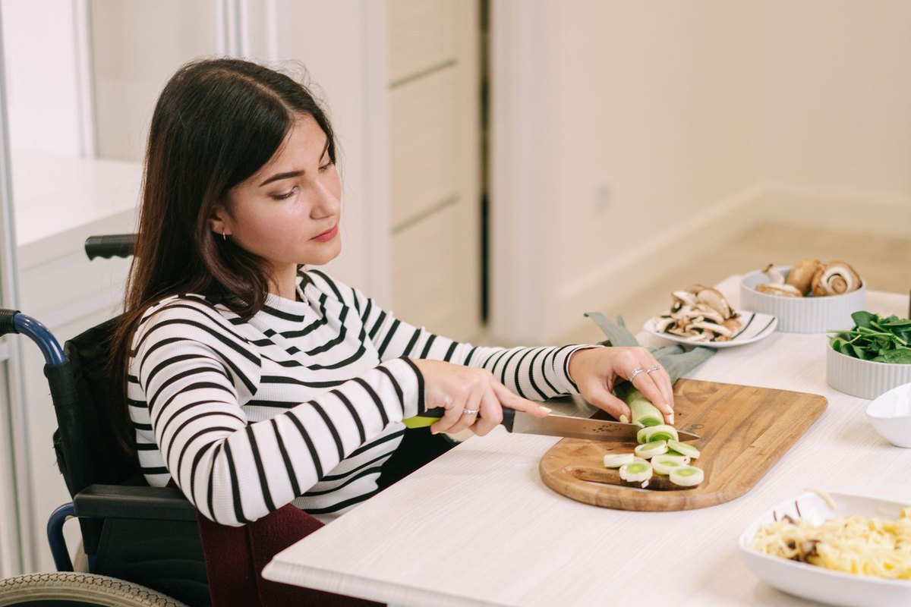
The machinery in this essay runs a life, and the life looks like this: breakfast prep at home, on an ordinary morning. Photo: Ivan S / Pexels.
Start here
The rig: one bladder, three wirings
Choose a wiring. The rig fills up, tries to empty, and shows you what the pressures do. Watch the kidneys at the top. They are the audience that matters. Everything dangerous in this essay is dangerous for one reason: what pressure does to the kidneys when it stays high for a long time.
Volume in bladder
0 mL
Detrusor pressure (now)
0 cm H2O
Sphincter
Closed, guarding
Kidneys
Unstressed
Overflow leak
None: voids on command
Pressure over one fill cycle
The gauge and the strip read fill pressure: the pressure inside the bladder while it stores urine. The red mark at 40 cm H2O is a different measurement borrowed as a flag: the leak point pressure from McGuire's 1981 study of 42 children with spina bifida (myelodysplasia), where a leak point above 40 tracked with kidney damage. Those were children with a birth defect of the spine, not adults with a traumatic cord injury, and the 40 line has never been validated in adults with SCI. A storage pressure under 40 can still endanger the kidneys. Read the line as a warning flag, not a cliff. The full story is in the trace section below.
Fill pressure (storage pressure)
The pressure inside the bladder while it stores urine. The gauge and the strip above read this one. A stretchy wall keeps it low across hundreds of milliliters. A stiff wall (poor compliance) lets it climb as volume grows.
Detrusor leak point pressure
A different number, measured in the trace section below: the fill pressure at the moment urine first leaks past the outlet during filling. McGuire's 40 cm H2O is a leak point number, from children with spina bifida, and it has never been validated in adults with SCI. No number on this page stands for both pressures.
Before any pattern: spinal shock
In the first days after injury, the bladder is silent at every level. It is atonic (floppy, with no muscle tone) and areflexic (the muscle has gone quiet and does not squeeze at all), and it cannot feel filling. What comes back, and when, follows Ditunno's four phases of spinal shock. Reflex voiding (the bladder squeezing on its own, by reflex) is the last thing to arrive. That is why the first full pressure test (baseline urodynamics) waits until spinal shock has passed, at about 6 to 12 weeks. The full first check-up (the baseline evaluation) is completed within 3 to 6 months of injury.
DAY 0 TO 1
Phase 1: areflexia
The bladder is floppy (atonic) and cannot empty, so urine is held back (retention) and must be drained with a catheter. No reflexes work anywhere below the lesion (the injured spot on the cord).
DAYS 1 TO 3
Phase 2: first reflexes
One small reflex (the bulbocavernosus reflex, a squeeze reflex doctors test at the bedside) comes back first. Its return ends the earliest phase. It does not mean reflex voiding is back.
DAY 4 TO 1 MONTH
Phase 3: early hyperreflexia
The deep tendon reflexes (like the knee-jerk reflex) return. In the bladder, a new reflex inside the cord is quietly being wired up (see the wall section).
1 TO 12 MONTHS
Phase 4: the new pattern
Reflexes become overactive (hyperreflexia) and muscles become stiff (spasticity). Reflex voiding slowly emerges over weeks to months. Autonomic dysreflexia (dangerous sudden spikes in blood pressure, often set off by a full bladder) may appear.
The trace
Urodynamics: the pressure test, drawn
A urodynamic study is a pressure test. A catheter (a thin tube) slowly fills the bladder while sensors record the pressures. The detrusor pressure (Pdet) is the pressure made by the bladder wall itself. Doctors find it by taking the pressure from the belly (abdominal pressure) away from the total. That way, the number shows only what the bladder wall itself is doing. Pick a pattern and play the fill. These traces are schematic: they are drawings, made in code from published pattern descriptions (Allio and Peterson 2016). They are not tracings from a real patient. A real tracing from a real patient is in the imaging section below.
Volume 0 mLPdet 0 cm H2O
Capacity
Peak filling pressure
Compliance
Leak behavior
Why 40? In 1981, McGuire divided 42 children with myelodysplasia (spina bifida, a birth defect of the spine) into two groups, using a detrusor leak point pressure of 40 cm H2O. That is the pressure at which the bladder starts to leak. Above 40: 68 percent had vesicoureteral reflux (urine flowing backward, up toward the kidneys) and 81 percent had dilated upper tracts (the kidneys and their drainage tubes swollen and stretched). At or below 40: no reflux, and 9 percent dilation.
The caveat, stated out loud: those were children with spina bifida, not adults with a traumatic cord injury. The 40 line has never been tested and proven (validated) in adults with SCI. It survives as an inherited danger flag: a reason to watch closely, not a proven adult cutoff. And a pressure under 40 can still endanger the kidneys, for example when reflux (urine flowing backward) is severe (high-grade).
Dyssynergia has types, with an asterisk
In 1981, Blaivas sorted detrusor-sphincter dyssynergia into types, using the sphincter's EMG (a recording of the muscle's electrical activity). The types are still taught. But neither his system nor the simpler ones that followed turned out to predict how patients do (they showed no sustained prognostic value). In practice, dyssynergia is usually reported simply as present or absent.
TYPE 1
Builds, then lets go
The EMG signal climbs while the bladder squeezes, then suddenly relaxes at peak pressure. Urine gets through.
TYPE 2
Bursts, on and off
The sphincter fires in bursts throughout the contraction. The stream sputters on and off.
TYPE 3
Squeezes the whole time, never lets go
The sphincter squeezes for the whole contraction and never lets go. Nothing gets out. Of the three types, this one puts the kidneys (the upper tract) at the highest risk.
The wall
Zoom in: the receptor map
Every drug in the treatment section attaches (binds) somewhere in this wall. Here is the wall, magnified: the urothelium (the bladder's inner lining) on top, the sensory fibers in the layer just under it (the suburothelium), then the detrusor muscle, with the bladder neck in the small circle (the inset). Tap a receptor (a docking spot where a signal chemical, or a drug, attaches).
Acts here
The rewiring: the signal changes fibers
The deepest change after a cord injury is not in the muscle. It is in the wire that reports fullness. In a healthy body, filling is reported by A-delta fibers (thin sensory wires). The signal runs a long loop: up to the pons and back down. After injury, silent C fibers (a different set of sensory wires) wake up. They run a short local reflex inside the cord instead. Toggle between the two wirings.
The long loop (A-delta fibers)
Small fibers wrapped in insulation (myelinated fibers) sense stretch (distension) and squeezing. The signal climbs to the pons, which decides what to do. The delay in the middle of this reflex, measured in cats with an intact cord:
about 60 ms
C fibers, the uninsulated sensors that usually report pain and harm (noxious signals), stay mostly silent during normal filling. Capsaicin (the hot chemical in chili peppers, which poisons C fibers) does nothing to this reflex.
The short circuit (C fibers take over)
After injury, C fibers that were silent before become mechanosensitive (they switch on when they are stretched). They drive voiding through a reflex that stays entirely inside the cord (a purely spinal reflex). The delay in the middle of this reflex, in cats with long-standing (chronic) spinal injury:
about 15 ms
Capsaicin now wipes out (abolishes) the reflex completely in spinal animals. That is the classic proof that the wire was swapped. Nerve growth factor, a signal that rises in the bladder and cord after injury, drives the new sprouting (the growth of new fiber endings). The electric currents in the sensory (afferent) fibers also change: they flip from tetrodotoxin resistant to tetrodotoxin sensitive (32.1 to 80.6 pA/pF). Tetrodotoxin is a nerve poison used in lab studies. The flip lowers the firing threshold, so the fibers fire more easily. In human bladders that are overactive after nerve injury (neurogenic bladders), the sensory markers P2X3 and TRPV1 are measurably higher (upregulated). To be clear about the evidence: the fiber experiments are animal data. The receptor findings are from people.
The ladder
Plug in a treatment
Every step of care (every rung of management) serves the same list of goals, in the same order, kidneys first. Then plug a therapy into the rig's current wiring and watch what it does to the trace. The trace changes are schematic (drawings, not measurements). The numbers beside each plug are the real trial data. The red 40 line in this chart is the same McGuire leak point flag: from children with spina bifida, not a validated adult cutoff (full caveat in the trace section).
1
Protect the kidneys
Keep storage pressures low. Every other goal can be negotiated. This one cannot.
2
Stay dry, sustainably
Staying dry (continence) by a method the patient can actually live with for decades.
3
Prevent the preventable
Infection, stones, and injury to the urethra (the tube urine leaves through) are the complications of the long game.
4
Preserve a life
Quality of life and independence (autonomy). The method serves the person, not the other way around.
What it does to the trace
What the studies show
The price
Two maneuvers stay unplugged, on purpose. Pushing urine out with belly pressure (the Crede maneuver) or straining (the Valsalva maneuver) is discouraged by the EAU guideline. Straining raises the pressure inside the bladder (intravesical pressure). It usually makes the sphincter squeeze shut by reflex. So emptying works badly, and the load lands on the kidneys and ureters (the upper tract). In one reported series, people who used Crede had hydronephrosis (kidneys swollen with backed-up urine) in 35.1 percent of cases, and ureteral dilatation (ureters stretched wide) in 59.5 percent.
Real imaging
The evidence, photographed
Everything above is drawn. This section is real. One patient carries most of it: a man with complete T11 paraplegia (both legs paralyzed by a complete injury at that level of the back) whose bladder was not managed well enough (inadequately managed) for 26 years after his 1985 injury. He came to care with hydronephrosis (kidneys swollen with backed-up urine) and renal failure (his kidneys failing). His case is the cautionary tale the whole essay is about. All images are open access and used under the licenses stated.
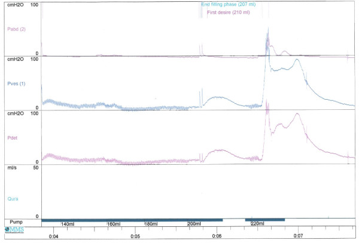
The real trace. This patient's pressure test (urodynamics): when doctors tapped above his pubic bone (suprapubic tapping) to provoke the detrusor, the detrusor pressure rose to 100 cm H2O. That is two and a half times the McGuire line. Compare the schematic traces above. The drawing was not exaggerating.
Vaidyanathan et al., International Journal of Surgical Case Reports 2012 (PMC3495664), Figure 1. CC BY 2.0.
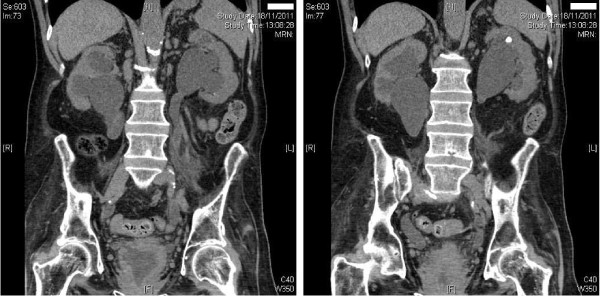
Where the pressure lands. A CT scan (coronal view, a slice seen from the front), same patient: moderately severe bilateral hydronephrosis (both kidneys swollen with backed-up urine), with hydroureter (the ureters, the tubes from the kidneys, swollen as well). Both kidneys are backing up behind a bladder that stored urine at high pressure for years. A small stone (a calculus) sits in a cup (a calyx) in the upper part (the upper pole) of the left kidney.
Vaidyanathan et al. 2012 (PMC3495664), Figure 3. CC BY 2.0.
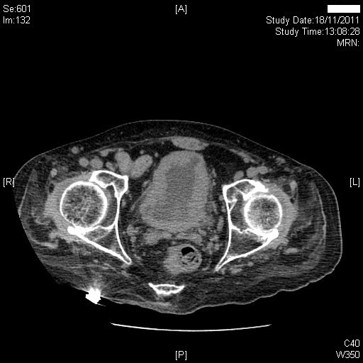
The wall, remodeled. CT of the same bladder: the wall is much thicker all the way around (marked circumferential thickening), with trabeculation (a thick, ridged inner wall), and the bladder is slightly shrunk (contracted). Muscle that spends decades squeezing against a closed outlet grows thick (hypertrophies), then stiffens.
Vaidyanathan et al. 2012 (PMC3495664), Figure 4. CC BY 2.0.
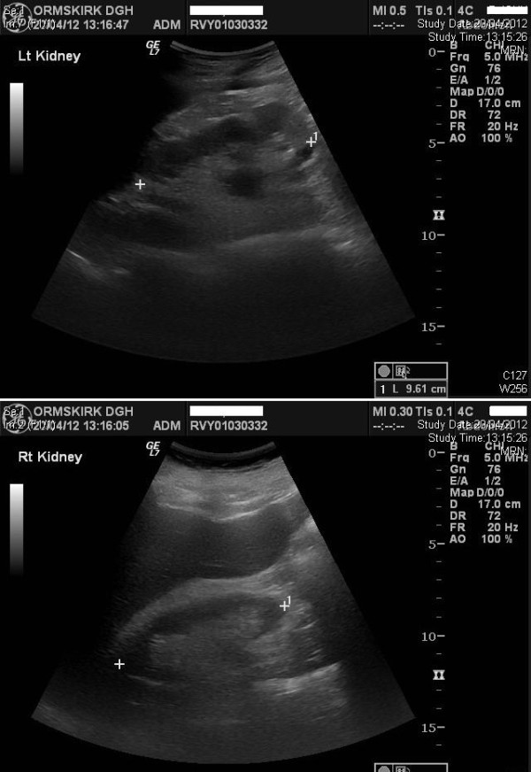
The after picture. Five months after drainage was set up (established) with an indwelling catheter (a catheter that stays in place), ultrasound showed both kidneys normal, with no hydronephrosis (no swelling from backed-up urine). Swelling of the kidneys and ureters (upper tract dilation) caused by pressure is often reversible: it can go back to normal if the pressure is relieved in time.
Vaidyanathan et al. 2012 (PMC3495664), Figure 5. CC BY 2.0.
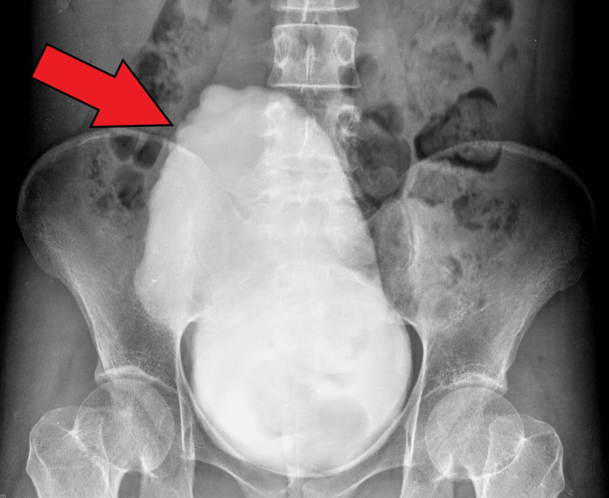
The Christmas tree bladder. A micturating cystourethrogram (an X-ray movie taken while the bladder empties): a long, pointed (elongated) bladder with an uneven, trabeculated (thick and ridged) wall. This is the classic shape on X-ray (the fluoroscopic silhouette) of a severe neurogenic bladder with an outlet that does not relax. Honest captioning: this bladder belongs to a patient with Wolfram syndrome, not a cord injury, and it is stretched full (distended) rather than shrunk (contracted). The shape is the teaching point. The cause (the etiology) is different.
Wolfram syndrome case report, Cureus 2024 (PMC11338651), Figure 4. CC BY 4.0.
What no image here can show: pressure. A calm-looking bladder on ultrasound can be storing urine at pressures that threaten the kidneys. That is why imaging and urodynamics (the pressure test) work as partners (complements) in follow-up checks (surveillance). One cannot replace the other.
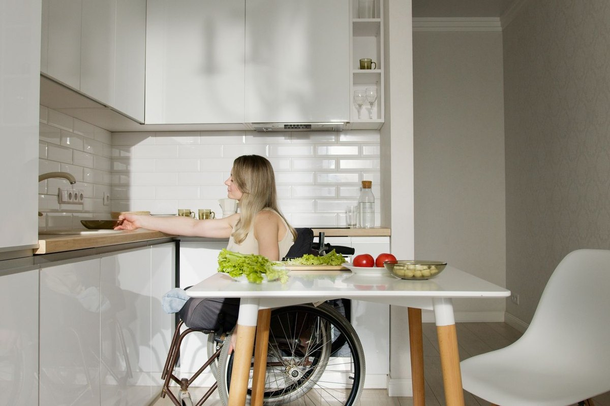
The long game is played here: at home, in the kitchen, repeated for decades. Photo: Artem Podrez / Pexels.
The long game
Method is destiny, and follow-up (surveillance) is the referee
Follow patients for decades, and one thing predicts complications better than almost anything else: the method used to manage the bladder. Weld and Dmochowski followed 316 people with SCI for an average (a mean) of 18.3 years (J Urol 2000). Singh and colleagues counted infections by method (n 545). The same table is why intermittent catheterization (using a catheter several times a day to empty the bladder), for all its burdens, stays on top of the ladder.
Bladder method
Any complication (Weld 2000)
Urinary infections (UTI) per 100 person-days (Singh)
Intermittent catheterization (CIC)
27.2%
0.34
Voiding on their own (spontaneous)
32.4%
0.34 (condom drainage)
Suprapubic catheter (through the belly)
44.4%
0.56
Urethral catheter left in (chronic)
53.5%
2.68
Stones make the contrast sharper. Compared with CIC, the risk (the hazard) of bladder stones was 12.8 times higher with a long-term urethral catheter, and 10.5 times higher with a suprapubic catheter (Ord et al. 2003). And with an indwelling catheter, bacteria move in fast: bacteriuria (bacteria living in the urine) is acquired at 3 to 7 percent per day, approaching 100 percent by 30 days (CDC and IDSA figures). That is why the infection question below is not whether bacteria are present. It is whether they are doing harm.
Three guidelines, three philosophies of follow-up
AUA / SUFU
2021 · risk-stratified
Sort patients by risk first (stratify risk). A suprasacral lesion (an injury above the reflex center) starts as unknown risk. That means urodynamics (the pressure test) and imaging of the kidneys and ureters (upper tract imaging) are required (mandated) to place it.
Low risk: no routine pressure tests, imaging, or kidney blood tests (renal labs).
High risk: a check every year (an annual assessment), kidney function tests, and upper tract imaging. Repeat the pressure test when there is a reason (when indicated).
After a treatment meant to fix dangerous storage or emptying, repeat the pressure test. Once pressures return to normal (normalize), repeat it about every 2 years or less often.
EAU Neuro-urology
2025 / 2026 · study for everyone
Invasive urodynamics (the full pressure test, with catheters in place) are a required (mandatory) assessment tool in neuro-urology patients (rated Strong), and the test is repeated in the same session.
Videourodynamics (the pressure test done with X-ray pictures at the same time) is the preferred form (Strong): pressures and pictures together.
The gap between follow-up visits (the interval) should not exceed 1 to 2 years, and should be shorter for high-risk patients. An ultrasound of the kidneys and ureters (the upper tract) about every 6 months in high-risk patients.
Watch blood pressure and heart rate during the study in patients at risk of autonomic dysreflexia (dangerous blood pressure spikes).
Consortium / PVA
2006 · honest uncertainty
A urologic evaluation (a bladder and kidney check-up) generally once a year (yearly).
The guideline says plainly that experts do not agree (there is no consensus) on how often follow-up testing should happen, or what it should include. No studies show the best (optimum) schedule.
Its core argument for the pressure test (urodynamics): a patient's history, lesion level, and symptoms alone cannot detect a high-pressure bladder.
The disagreement is real. The EAU requires (mandates) the invasive study for essentially everyone. The AUA sorts patients by risk (stratifies) and spares low-risk patients the study. The Consortium admits the evidence for any schedule (interval) is thin. All three agree on the basic point (the premise): what you cannot feel, you must measure.
Where infection fits in, briefly
Bacteria living in the urine (colonization) is the normal baseline state here, not a complication. Bacteria are present in the urine of about 70 percent of intermittent catheter users at any given time, and about 98 percent of people with indwelling catheters. IDSA guidance is direct: do not test for (screen for), and do not treat, asymptomatic bacteriuria (bacteria in the urine with no symptoms of infection) in spinal cord injury. Cloudy or strong-smelling urine alone is not a reason (an indication) to treat. And pyuria (white blood cells in the urine) does not separate colonization from true infection.
True infection is genuinely hard to call when feeling (sensation) is gone. The accepted clues are vague (nonspecific): fever, increased spasticity (stiffer muscles), autonomic dysreflexia (dangerous blood pressure spikes), new or worsening incontinence (leaking), and malaise (feeling unwell). The cost of guessing wrong can be measured. In a VA group (cohort) of neurogenic bladder visits (encounters), 27.5 percent of those visits, diagnosed and treated as a urinary tract infection, were actually asymptomatic bacteriuria (bacteria without infection). Having a PM&R provider involved was linked (associated) with much lower odds of that wrong management (inappropriate management) (adjusted OR 0.29). This distinction gets an essay of its own in this series. The bladder essay needs only what is at stake.
Fine print that matters
Creatinine lies politely after SCI. After SCI, people have less muscle (reduced muscle mass). So creatinine (a waste product measured in the blood, in the serum) and eGFR (an estimate of kidney function) make the kidneys look better than they are (they overestimate renal function). A normal creatinine can hide real kidney damage (impairment). Read kidney labs (renal labs) in SCI with suspicion.
Compliance cutoffs move. Poor compliance (a bladder wall that does not stretch well) is most often defined as under 20 mL per cm H2O. Severe compromise (seriously poor stretching) is under 13. But published series use different cutoff lines (cuts), such as under 12.5 in Weld's SCI work. Treat any single cutoff (threshold) as a shared convention, not a constant of nature.
The anticholinergic bill may come due in the brain. In large studies that watched people over time (observational studies) of older adults (not SCI groups), bladder antimuscarinics at the highest total (cumulative) exposure carried an adjusted odds ratio of 1.65 for dementia (Coupland et al., JAMA Internal Medicine 2019). The link (the association) comes from watching. It is not proof of cause. Drugs (agents) differ in how well they reach the brain: oxybutynin crosses readily, while trospium, a charged molecule that the body pumps back out of the brain (a P-glycoprotein substrate), was undetectable (could not be found) in spinal fluid in a 12-patient study. For people facing decades of therapy, that is an argument for careful dosing (dose discipline) and regular review (periodic review).
Dyssynergia prevalence is quoted loosely. The Consortium guideline reports detrusor-sphincter dyssynergia in up to 96 percent of suprasacral lesions (injuries above the reflex center). Other groups (cohorts) report much lower shares (proportions). Read 96 as a ceiling, not a census (not a full count).
Until the 1970s, kidney failure (renal failure) and urinary complications were the leading causes of death after spinal cord injury. In a modern (contemporary) series of 100 deaths after traumatic SCI, kidney failure (renal failure) accounted for 1 death. The rig, the traces, and the follow-up (surveillance) above are why.
Sources
de Groat WC, Griffiths D, Yoshimura N. Neural control of the lower urinary tract. Compr Physiol 2015 (PMC4480926).
de Groat WC, Yoshimura N. Afferent nerve regulation of bladder function in health and disease. Handb Exp Pharmacol 2009 (PMC3383010).
Yoshimura N, de Groat WC. Plasticity of sodium channels in afferent neurones after spinal cord injury. J Physiol 1997.
McGuire EJ, et al. Prognostic value of urodynamic testing in myelodysplastic patients. J Urol 1981;126:205-209.
Consortium for Spinal Cord Medicine. Bladder management for adults with spinal cord injury. J Spinal Cord Med 2006 (PMC1949036).
Ginsberg DA, et al. The AUA/SUFU guideline on adult neurogenic lower urinary tract dysfunction. J Urol 2021.
EAU Guidelines on Neuro-Urology. Pocket guidelines 2025; limited update 2026 (Sartori et al., Eur Urol 2026).
Allio BA, Peterson AC. Urodynamic patterns in adult neurogenic bladder. Transl Androl Urol 2016 (PMC4739972). Pattern descriptions used; the article's figures are all rights reserved and are not reproduced.
Abrams P, Andersson KE, et al. Muscarinic receptors: distribution and function. Br J Pharmacol 2006 (PMC1751864).
Braverman AS, Ruggieri MR. Regulation of bladder muscarinic receptor subtypes. Auton Autacoid Pharmacol 2006 (PMC3275807).
Apostolidis A, et al. Biological effects of botulinum toxin A in the lower urinary tract. Nat Clin Pract Urol 2008 (PMC3119263).
Amarenco G, et al. Solifenacin in neurogenic detrusor overactivity (SONIC). Neurourol Urodyn 2017.
Welk B, et al. Pilot randomized trial of mirabegron in neurogenic lower urinary tract dysfunction. Neurourol Urodyn 2018; plus the individual participant data meta-analysis of the two mirabegron trials (n 98).
Cruz F, et al. Eur Urol 2011, and Ginsberg D, et al. J Urol 2012 (the DIGNITY programme); Moore L, et al. Toxins 2016; BOTOX US prescribing information.
Schneider MP, et al. Tibial nerve stimulation for neurogenic lower urinary tract dysfunction: systematic review. Eur Urol 2015.
Liechti MD, et al. Sacral neuromodulation for neurogenic lower urinary tract dysfunction. NEJM Evidence 2022.
Weld KJ, Dmochowski RR. Effect of bladder management on urinary tract complications in SCI. J Urol 2000; Ord J, et al. 2003; Singh R, et al. (PMC3051121).
Kaufman JM, et al. Bladder cancer and squamous metaplasia in SCI. J Urol 1977; West DA, et al. Urology 1999.
Richardson K, et al. Anticholinergic drugs and risk of dementia. BMJ 2018; Coupland CAC, et al. JAMA Intern Med 2019.
Ditunno JF, et al. Spinal shock revisited: a four-phase model. Spinal Cord 2004 (via StatPearls NBK448163).
Imaging: Vaidyanathan S, et al. Int J Surg Case Rep 2012 (PMC3495664), CC BY 2.0. Wolfram syndrome case report, Cureus 2024 (PMC11338651), CC BY 4.0.
VA neurogenic bladder cohort on asymptomatic bacteriuria. Arch Phys Med Rehabil 2024 (PMC10841968).
The PM&R Files · Essay 14
What Actually Works for Back Pain
Most treatments barely help. A few help a little. Nothing is magic.
“Doc, my back hurts. What actually works?” Some version of that question opens half my clinic days. I am a rehab doctor, so I checked the evidence, treatment by treatment. The honest answer starts with two questions back: which back pain is it, and what should “works” mean? Pick the situation, then pick what you want to improve. There is no single winner, because these treatments were tested on different problems, against different comparisons, over different clocks. Any list that ranks them all on one scale is hiding that.
A PM&R resident physician
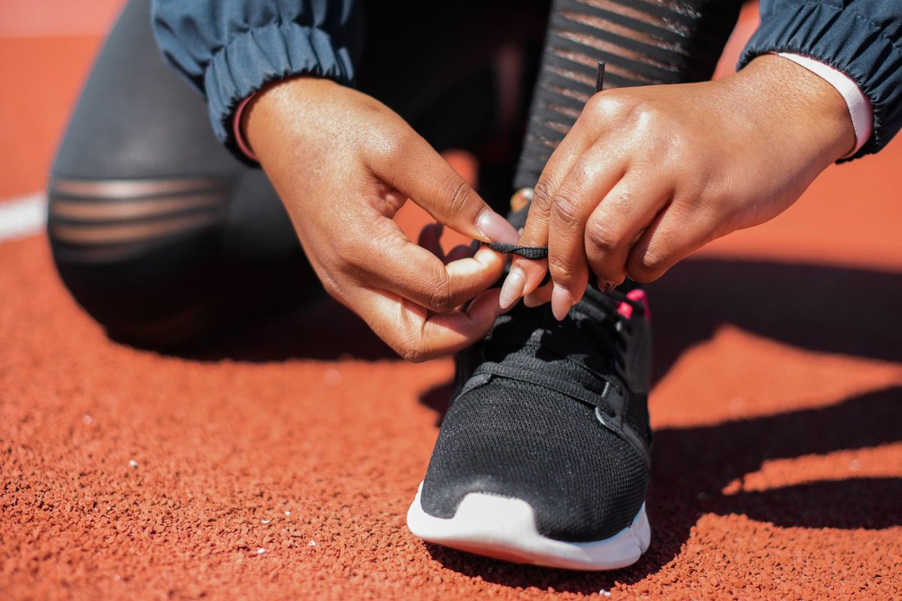
Exercise and coaching sit near the top of the persistent pain pathway below, and they start like this: lacing up and moving. Photo: Mikhail Nilov / Pexels.
Step 1 · Which back pain?
Step 2 · What should improve?
Step 3 · Narrow by kind (optional)
Narrowing only dims the other kinds. Nothing is hidden, and every card keeps its downside on its face in every view.
A new episode, nothing sinister found, pain mostly in the back. The honest headline for this shelf: time does most of the work, and few treatments were ever tested in fresh pain. Most of the famous names were tested in pain that had already lasted months, so they live in the next pathway.
Pain past about three months, with no single structural cause found. Nothing on this shelf is dramatic. The clearest wins are modest, each is measured against the comparison named on its card, and the leaders work on function at least as much as on pain.
Pain running down the leg from an irritated nerve root, often called sciatica. A different problem with a different shelf: a shot that buys a few easier weeks, and a surgery question that turns out to be about timing, not about the ending.
Bars appear only in the pain lane. A bar is the average difference in pain between two groups in trials, on the 0 to 100 pain scale each review used, against the comparison named on the card. It is not one person’s pain dropping, and cards built on different comparisons are not a league table. Each card quotes its own review’s line for a difference worth feeling, because that line is not the same everywhere.
Moving and daily life: 55% have no disability by 6 weeks. 83% by 1 year.
Downsides: It often comes back. 73% had at least one recurrence within a year.
Cost: Free.
This card is the background every treatment in this pathway is implicitly racing, and it is embarrassingly strong for new back pain. A pooled analysis of 47 cohorts and 9,224 people found average pain fell from 56 to 26 in the first 6 weeks, then flattened: 22 at 26 weeks, 21 at 52 weeks.
In one cohort of 973 people who saw a primary care clinician for a new episode, 39% were completely pain free (a full month with no pain) by 6 weeks, 58% by 12 weeks, and 73% by 1 year. Most improvement happens early, then levels off, and recurrence is common.
Read the boundary carefully: this is the course of new, acute episodes, observed in cohorts, not a no-treatment trial arm. Pain that has already settled in for months improves far less on its own (56 to only 48 in 6 weeks in the same pooled analysis). That slower course is the context card in the persistent pathway.
Sources: clinical course systematic review and meta-analysis, CMAJ 2024 (47 cohorts, 9,224 people); Henschke et al., BMJ 2008 (n=973); Pengel et al., BMJ 2003 (15 studies).
In the same pooled analysis behind the new episode card (47 cohorts, 9,224 people), pain that had already become persistent improved far more slowly: from 56 to 48 in the first 6 weeks, against a fall to 26 for new episodes. That gap is the whole reason the trials below exist. Their results are differences against the comparisons named on their cards, never against this drift, and this drift is never subtracted from them.
Moving and daily life: 4.6 points better on a 24 point activity scale at 13 weeks. Still better at 52 weeks.
Downsides: No pills, no needles, no surgery. Coaching and practice.
Cost: More up front. Saved about AU$5,276 per person over a year.
Cognitive functional therapy, or CFT, is rehab with a trained physical therapist. The therapist coaches you to move in ways that hurt less, and helps you rethink what the pain means, so fear stops running your life.
The RESTORE trial put it against usual care in 492 adults with chronic, disabling back pain. Activity limitation (how much pain limits daily life, on a 24 point scale) improved 4.6 points more with CFT at 13 weeks, and the gain held at 52 weeks. One arm added movement sensors and biofeedback (live data from sensors worn on the body). It added nothing. The coaching was the treatment.
Honest gap: RESTORE reported pain scores too, but no clean pain number could be confirmed from the primary report for this essay, so this card is scored on its verified headline result, which is about moving and living.
Source: Kent et al., The Lancet 2023 (RESTORE trial, n=492).
Moving and daily life: 6.8 points better on a 0 to 100 scale.
Downsides: Sore muscles and short flare ups. Nothing serious in the trials.
Cost: Low. The real price is your time, for weeks.
The biggest review in this list: 249 trials of exercise for chronic back pain, pooled. Pain improved 15.2 points more than doing nothing, usual care, or a placebo, at the earliest follow-up. That just clears the review’s own line for a difference patients can feel, which was 15 points for pain.
Two honest catches. Function improved less than pain did: 6.8 points, under the review’s 10 point line for function. And when exercise was compared with other real treatments instead of nothing, the pain edge shrank to 9.1 points, under the bar. Beating nothing is a lower bar than beating another treatment.
Source: Hayden et al., Cochrane Database of Systematic Reviews 2021 (249 trials).
Moving and daily life: 3.3 points better than sham on a 0 to 100 function scale, not clearly different from zero.
Downsides: Needle pain, bruising, small bleeds. Harm rates about the same as sham.
Cost: Moderate. A course of sessions.
Against no treatment, acupuncture looks good: pain 20.3 points better right after treatment. The hard test is sham treatment, needles placed to look real without doing the real thing. There the edge falls to 9.2 points, and the reviewers note it did not reach the difference they had predefined as clinically relevant.
The GERAC trial shows why that sham gap cannot be read as a measurement of ritual. In 1,162 people with years of back pain, 47.6% responded to real acupuncture and 44.2% responded to sham needles, a gap that was not significant. Both needle groups nearly doubled the response to standard drug and exercise care (27.4%). A sham comparison subtracts everything the two groups share: time passing, attention, expectation, the setting, and pain drifting back toward its average on its own. So the small real versus sham gap means the needles themselves add little that the trial can detect. It does not prove the shared part was just ritual, and it does not make the relief people felt imaginary. It means this design cannot assign the shared relief to the needles.
Sources: Mu et al., Cochrane Database of Systematic Reviews 2020 (33 trials, 8,270 people); Haake et al., Archives of Internal Medicine 2007 (GERAC, n=1,162).
Moving and daily life: 3.3 points. Not a proven gain.
Downsides: Side effects 1.6 times more common: dizzy, sleepy, headache, nausea.
Cost: Low. A short course of generic pills.
These are the antispasmodic pills (drugs meant to calm muscle spasm) often given for a fresh back strain. A BMJ review pooled 31 trials with 6,505 people. Pain at 2 weeks or less improved 7.7 points. The review had set 10 points as the smallest effect worth having, and the authors say this one is probably too small to matter.
By 3 to 13 weeks there was no pain benefit left. The trade for a small, brief gain is feeling sedated (slowed and sleepy) while it lasts.
Source: Cashin et al., BMJ 2021 (31 trials, 6,505 participants).
Moving and daily life: 0.85 points better on a 24 point disability scale.
Downsides: No extra harm seen in short trials. Stomach, kidney, and heart risks grow with dose and time.
Cost: Low. Mostly over the counter.
NSAIDs are the anti-inflammatory pain pills, like ibuprofen and naproxen. A Cochrane review of 13 trials and 4,807 people with chronic back pain found pain 7 points better than placebo. That is about half the exercise effect, from a bottle.
The fragile part: when the reviewers kept only the trials with the most careful methods, the benefit stopped being significant. And the trials were short, a median of 56 days for the pain outcome, too short to weigh the harms this drug family is known for over months and years. That is why guidance says lowest dose, shortest course.
Source: Enthoven et al., Cochrane Database of Systematic Reviews 2016 (13 trials, 4,807 people).
Moving and daily life: About 0.9 points better on a 24 point disability scale.
Downsides: Nausea and dry mouth are common. In one trial 15.2% stopped it for side effects, vs 5.4% on placebo.
Cost: Low to moderate. A generic pill, taken daily.
Duloxetine is an antidepressant that also turns down pain signals. A 2020 meta-analysis of 9 trials (in joint arthritis or back pain) found average pain 0.67 points better than placebo on a 0 to 10 scale, about 7 points on a 0 to 100 scale, over trials of about 12 weeks.
In the back pain trials alone, 59.7% of people on duloxetine got at least 30% pain relief, vs 47.8% on placebo. A real edge, and a modest one. The cost of it: across the pooled trials, people were more than twice as likely to quit the drug because of side effects (risk ratio 2.31).
Sources: Weng et al., Osteoarthritis and Cartilage 2020 (9 trials); pooled responder analysis of 4 duloxetine back pain trials (1,295 people).
Moving and daily life: 1.5 points better on a 24 point scale. More people at work at 1 year than with physical treatment alone.
Downsides: Weeks of appointments. No physical harm signal.
Cost: High up front. A whole team, for weeks.
These programs combine exercise, pain education, and psychological support from a team, for people whose pain has lasted a long time. A Cochrane review of 41 trials and 6,858 people (pain for over a year on average) found small gains: pain 0.5 points better on a 0 to 10 scale, disability 1.5 points better on a 24 point scale, both vs usual care.
The standout result is work. People in these programs were more likely to be at work at 1 year than people given physical treatments alone (odds ratio 1.87, meaning the odds were close to double). Against usual care, that work edge vanished. Two trials compared these programs with surgery and found little difference in outcomes, with more adverse events in the surgery groups.
Moving and daily life: 8.8 points better than sham at one month, on a 0 to 100 scale in the 2026 update’s plain language summary. Very low certainty.
Downsides: Muscle soreness, stiffness, and short increases in pain. No serious harms observed in the 2026 update.
Cost: Moderate. Repeat visits.
Hands-on spinal manipulation and mobilisation, the thrust and movement techniques used by chiropractors, osteopaths, and some physical therapists. This card now leads with the 2026 Cochrane update, which pooled 76 trials and 11,866 people and replaces the 2011 version of the same review.
Against sham treatment at one month, pain averaged 7.0 points better and function moderately better, both at very low certainty, with results varying so much between trials that the reviewers urge caution. Against other conservative care, pain differed by 4.7 points and function by a small amount. The 2019 BMJ review this essay originally used (47 trials, 9,211 people) found the same shape: no edge over recommended care, a small edge over weaker comparisons, and too little sham evidence to judge. The update finally pools a sham comparison, and the edge it finds is small and uncertain.
Sources: de Zoete et al., Cochrane Database of Systematic Reviews 2026 (76 trials, 11,866 people); Rubinstein et al., BMJ 2019 (47 trials, 9,211 people).
Moving and daily life: 3.1 points better disability, short term only.
Downsides: A needle placed by the spine, each time. Small procedure risks, repeated.
Cost: Moderate to high. A procedure, often repeated.
A steroid shot into the space around the spinal nerves. A review of 23 placebo controlled trials found leg pain 6.2 points better and disability 3.1 points better, both only in the short term, meaning 2 weeks to 3 months. The range proposed as worth having was 10 to 30 points. This does not reach it.
There was no significant long term effect, and no effect on back pain itself. This card is about sciatica, pain running down the leg from an irritated nerve root. The help is real, brief, and narrow.
Source: Pinto et al., Annals of Internal Medicine 2012 (23 trials).
Moving and daily life: No difference in disability scores overall.
Downsides: An operation’s risks, taken now instead of later.
Cost: High. Surgery plus recovery time.
Schematic, drawn from the trial’s median recovery times and its 1 year recovery rate. It shows the shape of the result, not patient level data.
The Peul trial enrolled 283 people with 6 to 12 weeks of severe sciatica. Half had early surgery to remove the disc material pressing on the nerve. Half stayed with conservative care, with surgery later if they still needed it.
Surgery bought speed: median time to recovery was 4.0 weeks vs 12.1 weeks. It did not buy a better ending. By 1 year, 95% of both groups reported recovery, and disability scores did not differ. One more number cuts both ways: 39% of the waiting group chose surgery in the end. Waiting was not free of surgery. It just made it optional.
Source: Peul et al., New England Journal of Medicine 2007 (n=283).
Moving and daily life: Disability 4.1 points better in one trial (0 to 100 scale). 2.3 points, not significant, in the other.
Downsides: Complications in 11% of surgery patients vs 0% in rehab (MRC trial). By 4 years, 23% of fused patients had needed more surgery.
Cost: About $92,000 per quality adjusted life year gained vs rehab.
Fusion welds two or more vertebrae (spine bones) together so the segment stops moving. Two trial families asked whether that beats hard rehabilitation for chronic back pain. The answer, twice, was basically a tie.
Scope, stated plainly: every person in these trials had chronic nonspecific or degenerative back pain and had already been judged a fusion candidate. Nothing here speaks to fusion after trauma, for deformity, or to free a trapped nerve.
The MRC trial enrolled 349 people, every one already judged a fusion candidate. Disability improved slightly more with surgery, by 4.1 points on a 0 to 100 scale. The authors said that gap only just reached the smallest difference that counts, and nothing else differed, not even the walking test. Surgery also brought complications in 11% of patients, vs none in rehab, and 28% of the rehab group crossed over to surgery anyway.
The Brox trial compared fusion with talk therapy plus exercise and found no significant difference (2.3 points). An independent judge rated 76% of the exercise group a success, vs 70% of the surgery group. At 4 years the gap between the approaches was 1.1 points. A quality adjusted life year is one year lived in full health; at about $92,000 each, fusion bought very few.
Sources: Fairbank et al., BMJ 2005 (MRC Spine Stabilisation Trial, n=349); Brox et al., Spine 2003 (n=64) and Annals of the Rheumatic Diseases 2010 (4 year follow up, n=124); Rivero-Arias et al., BMJ 2005 (cost analysis).
Moving and daily life: No proven gain.
Downsides: Dizziness, fatigue, muddled thinking, visual disturbance. All more common than on placebo.
Cost: Low to moderate. Generic pills, often taken for years.
Gabapentin and pregabalin were built for seizures and nerve pain, and are prescribed for ordinary back pain every day. A 2017 review found only 8 randomised trials to judge them by, and the evidence was mostly low or very low quality.
Even so, the picture is clear enough: gabapentin showed no significant pain benefit vs placebo, and pregabalin performed worse than other pain medicines it was compared with. What the drugs reliably add is side effects. A treatment with no proven benefit does not need many harms to lose.
Source: Shanthanna et al., PLoS Medicine 2017 (8 trials).
Moving and daily life: A tie. Pain interference 3.4 vs 3.3 (0 to 10 scale) at 12 months.
Downsides: Medication symptoms about double (score 1.8 vs 0.9). Plus the risk of dependence.
Cost: The pills are cheap. The habit is not.
The SPACE trial randomised 240 veterans with chronic back pain or hip and knee arthritis pain to opioid or non-opioid medicines for 12 months. It is the fairest head to head test in this pathway.
Opioids did not win on function (a tie), did not win on pain (slightly worse), and caused about twice the medication related symptoms. Two caveats, stated plainly: the trial was not blinded, so people knew which drug they were taking, and it studied veterans, who may not match every clinic population. Neither caveat explains away a loss on every measure.
Source: Krebs et al., JAMA 2018 (SPACE trial, n=240).
So what actually helps?
It depends which back, and what “helps” means. For a new episode, time is the main treatment: stay active, and patience beats almost everything that has been tested in fresh pain.
For pain that has settled in, moving helps most. Exercise and coaching style rehab lead on function, with modest pain gains, and their numbers are averages against the comparisons named on their cards. Some pills help a little, for a while. None of them fix a back.
For leg pain from a nerve root, a steroid shot buys a few easier weeks, and early surgery buys speed, not a better ending. Every number on this page is an average difference between groups in trials. None of them is a promise about your back.
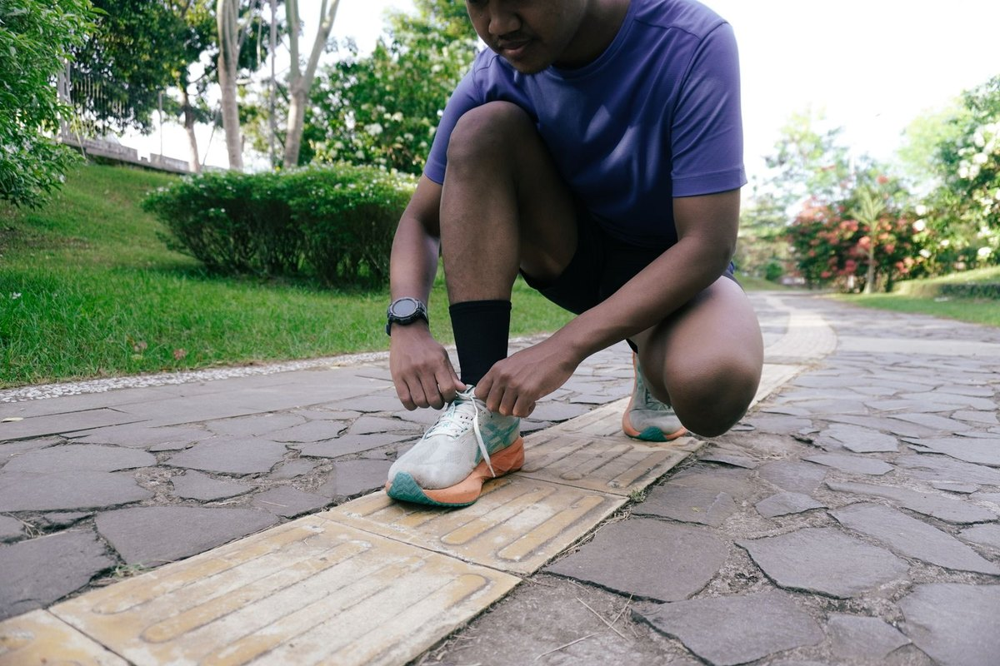
The short version of this whole page: stay as active as you can, and give it time. Photo: Yazid N / Pexels.
Sources
Hayden JA, et al. Exercise therapy for chronic low back pain. Cochrane Database of Systematic Reviews 2021.
Kent P, et al. Cognitive functional therapy with or without movement sensor biofeedback versus usual care (RESTORE). The Lancet 2023. n=492.
Krebs EE, et al. Effect of opioid vs nonopioid medications (SPACE). JAMA 2018. n=240.
Peul WC, et al. Surgery versus prolonged conservative treatment for sciatica. New England Journal of Medicine 2007. n=283.
Pinto RZ, et al. Epidural corticosteroid injections for sciatica. Annals of Internal Medicine 2012. 23 trials.
Shanthanna H, et al. Benefits and safety of gabapentinoids in chronic low back pain. PLoS Medicine 2017. 8 trials.
Enthoven WTM, et al. Non-steroidal anti-inflammatory drugs for chronic low back pain. Cochrane Database of Systematic Reviews 2016. 13 trials, 4,807 people.
Cashin AG, et al. Efficacy and safety of non-benzodiazepine antispasmodics for low back pain. BMJ 2021. 31 trials, 6,505 people.
Weng C, et al. Duloxetine in osteoarthritis or chronic low back pain: systematic review and meta-analysis. Osteoarthritis and Cartilage 2020. 9 trials.
Rubinstein SM, et al. Benefits and harms of spinal manipulative therapy for chronic low back pain. BMJ 2019. 47 trials, 9,211 people.
de Zoete A, et al. Spinal manipulative therapy for adults with chronic low back pain. Cochrane Database of Systematic Reviews 2026. 76 trials, 11,866 people. The 2026 update of the long running Cochrane review; this essay’s manipulation card now leads with it for the sham comparison.
Mu J, et al. Acupuncture for chronic nonspecific low back pain. Cochrane Database of Systematic Reviews 2020. 33 trials, 8,270 people.
Haake M, et al. German Acupuncture Trials (GERAC) for chronic low back pain. Archives of Internal Medicine 2007. n=1,162.
Kamper SJ, et al. Multidisciplinary biopsychosocial rehabilitation for chronic low back pain. BMJ 2015 (Cochrane review). 41 trials, 6,858 people.
Fairbank J, et al. Randomised controlled trial of surgical stabilisation vs intensive rehabilitation (MRC). BMJ 2005. n=349.
Brox JI, et al. Lumbar fusion vs cognitive intervention and exercises. Spine 2003 (n=64); 4 year follow up, Annals of the Rheumatic Diseases 2010 (n=124).
Rivero-Arias O, et al. Cost utility analysis of surgical stabilisation vs rehabilitation. BMJ 2005.
Clinical course of acute, subacute and persistent low back pain: systematic review and meta-analysis. CMAJ 2024. 47 cohorts, 9,224 people in the meta-analysis.
Henschke N, et al. Prognosis in patients with recent onset low back pain in Australian primary care. BMJ 2008. n=973.
Pengel LHM, et al. Acute low back pain: systematic review of its prognosis. BMJ 2003. 15 studies.
The PM&R Files · Essay 15
What Would You Want Back?
Ask anyone what they would want back after a spinal cord injury, and most say walking. Then ask the people who live with one.
A PM&R resident physician
You wake up after the accident. You can have one thing back. Which one do you pick?
Picture it first. A car crash. A fall. A dive into shallow water. The spinal cord is hurt, and the hurt is not going away. But say you could have one thing back. Just one. Pick the one you would miss most.
Tap one. There is no wrong answer. Then scroll down, and meet the people who answered for real.
Hands at work. For people with neck injuries, hand function is the thing they rank first, ahead of walking. Illustrative photo; the person pictured is not a study participant. Photo: Christina Morillo / Pexels.
What 681 people actually picked
In 2004, a researcher named Kim Anderson asked 681 people living with spinal cord injury to rank seven things. For each one, the question was: how much would getting it back improve your life? Not doctors guessing. The people themselves.
Two groups answered, and they did not answer the same way. Tetraplegia means the injury is in the neck, so the arms and legs are both affected. Paraplegia means the injury is lower down, so the arms and hands still work.
People with tetraplegia
Injury in the neck. Arms and legs affected. Most wanted first.
1Arm and hand function49% put this first. No other function was put first by more than 13%.Your pick
2Sexual functionSecond. Ahead of walking.Your pick
3Trunk stabilityBalance and strength in the trunk. Sitting up, and staying up.Your pick
4Bladder and bowel controlThe survey asked these as one item. 40% put it first or second.Your pick
5WalkingFifth of seven. The pick most of us make first sits here.Your pick
6Normal feelingTouch and sensation, the way they were before.Your pick
7No chronic painSeventh of seven.Your pick
People with paraplegia
Injury lower down. Arms and hands work. Most wanted first.
1Sexual functionFirst. 45% put it first or second.Your pick
2Bladder and bowel controlMore than 30% of everyone surveyed put this first or second.Your pick
3Trunk stabilityBalance and strength in the trunk. Sitting up, and staying up.Your pick
4Walking38% put it first or second. It still finished fourth.Your pick
5No chronic painFifth of seven.Your pick
6Normal feelingTouch and sensation, the way they were before.Your pick
7Arm and hand functionSeventh of seven, because people with paraplegia never lost it.Your pick
Your pickArm and hand function was on the survey’s list too: ranked first by 3.3%, last of the seven, because people with paraplegia never lost it.
How to read these lists: each one follows the order of the survey's first-place votes, most wanted first. Anderson asked about bladder and bowel control as one single item, so the two share one row in each list. If you picked bladder or bowels at the top, that shared row is your row.
Now look at walking. Fifth of seven in one list. Fourth of seven in the other. It led neither list, even though 38% of people with paraplegia put it first or second. And this was not one odd survey. In 2012, a review gathered 24 studies and 5,262 people. The same names kept rising to the top: hands, for people with neck injuries, and bladder, bowel, and sexual function for everyone.
Then the bowel study landed
In 2018, researchers asked 287 people living with spinal cord injury to do a simple rating. Their injuries ran from the neck to the tailbone. For each part of daily life, they scored how much it hurt their quality of life, from 1 to 10. Bowel function came out worst of all. Worse than bladder problems. Worse than sex, pain, spasms, and skin problems. Using a wheelchair, the loss most of us picture first, sat near the bottom.
The numbers explain why. 78% said bowel care was a problem for them. 24% spend more than an hour on a typical bowel routine. 71% had not changed that routine in over five years. It is slow. It is private. It plans your whole day around it. And it almost never makes a headline.
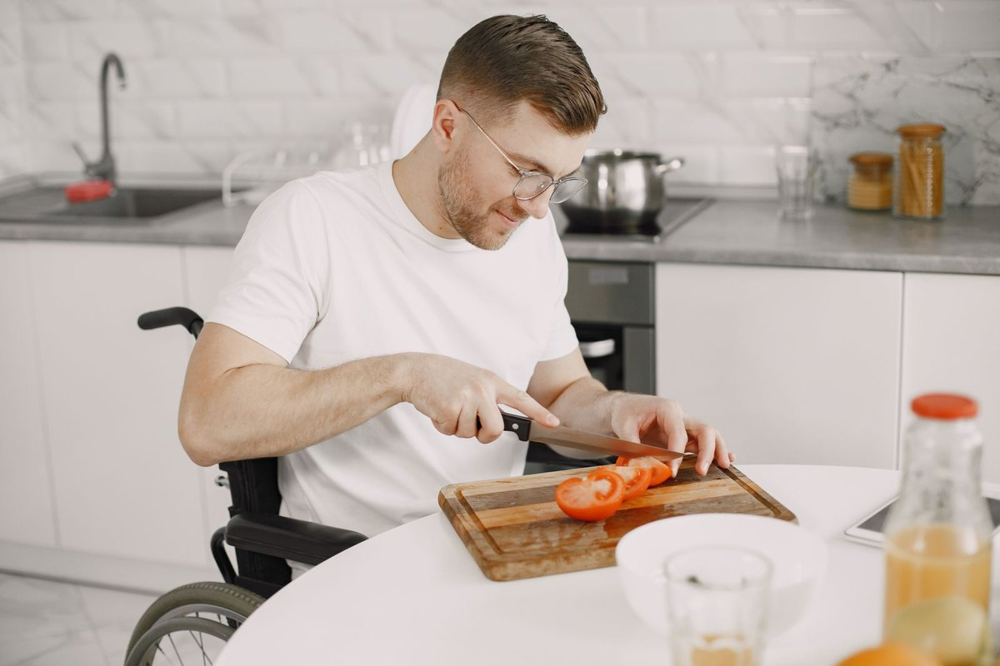
Lunch, made at home. The everyday functions in the lists above are exactly where research money runs scarcest. Illustrative photo; the person pictured is not a study participant. Photo: Gustavo Fring / Pexels.
Meanwhile, the money chases walking
You have seen the videos. A person in a robotic frame stands up, takes a few steps, and the crowd cries. Those moments are real, and the work behind them matters. But follow the research money, and a pattern shows.
Movement and mobility researchabout $225 million
Pain, bladder, bowel, skin care, and every other complication, combinedabout $130 million
US federal funding for spinal cord injury research, coded from federal awards (NIH 2008 to 2023, CDMRP 2009 to 2023, VA 2017 to 2025).
The whole field also runs on less than you would think. Spinal cord injury carries about 1% of the disease burden in the United States, and gets about 0.2% of the federal research money.
The 2012 review found the same tilt in the science itself. The most research attention had gone to motor function and bladder problems. Bowel care and sexual function, near the top of every patient list, were the topics the review said needed far more study.
Two researchers who live with spinal cord injury wrote it plainly in 2026. Research goals, they said, have long favored "restoring locomotion above all," while most people with chronic injuries are asking for help with "relentless daily complexities."
Why we all guess walking
If you tapped "Walk again" at the top, you are in good company. Almost everyone does. There is no shame in it. But notice what just happened. You pictured this injury from the outside, the same way nearly all of us do.
From the outside, the wheelchair is the part you can see. So walking looks like the whole loss. From the inside, the day runs on smaller machinery. Can I dress myself? Can I get the morning routine done before noon? Can I leave home without mapping every bathroom on the route?
And these are not answers people grow into over time. Anderson checked whether the rankings shift as the years pass. Barely. People hurt for less than three years ranked things much like people hurt for far longer. It is not that they stopped wanting. It is that the life asks for different things than we guess.
Two hands around a warm cup. A small thing, until it is the thing you cannot do. Illustrative photo; the person pictured is not a study participant. Photo: Ayşenur / Pexels.
What a good SCI team asks about first
A good spinal cord injury team asks about these functions first, in the order patients ranked them.
Hands first. What can your hands do today, and what would one more movement unlock?
Bladder. Is the routine safe and dry? Does it leave room for a life around it?
Bowels. How long does the routine take, and when did anyone last try to make it better?
Skin. Is it checked every day? People with paraplegia rank pressure sores right behind bladder and bowel worries, and one sore can undo months of progress.
Sex. Is anyone asking about it out loud, like any other function, instead of skipping it?
Pain. Is it named, measured, and treated, even though it sits near the bottom of the wish lists?
Walking and standing. Still on the list, for health, for bones, for blood pressure. Just not first.
The order is not the clinic’s invention. It is the order patients gave when Anderson asked them in 2004.
Sources
Anderson KD. Targeting recovery: priorities of the spinal cord-injured population. Journal of Neurotrauma. 2004. Survey of 681 people with spinal cord injury.
Inskip JA, Lucci VEM, McGrath MS, Willms R, Claydon VE. A community perspective on bowel management and quality of life after spinal cord injury: the influence of autonomic dysreflexia. Journal of Neurotrauma. 2018. Survey of 287 people.
Simpson LA, Eng JJ, Hsieh JTC, Wolfe DL, and the SCIRE Research Team. The health and life priorities of individuals with spinal cord injury: a systematic review. Journal of Neurotrauma. 2012. 24 studies, 5,262 people.
Gillespie T, Buxton A, Kondiles BR, Leal-Garcia M, Pacheco MR, Tran AV, et al. Funding distributions, trends, gaps, and policy implications for spinal cord injury research: a systematic analysis of U.S. federal funds. Journal of Neurotrauma. 2026.
Sorani MD, Rabchevsky AG. The unmet burden of secondary SCI complications: lost in translation. Spinal Cord. 2026.
Snoek GJ, et al. Survey of the needs of patients living with a spinal cord injury: the Netherlands. Summarized in Simpson et al. 2012.
A note on the two lists: they follow the order of first-place votes in Anderson's published figures. The top pick in each group, sexual function second for tetraplegia, and the high spots for bladder and bowel control are confirmed in several later papers. Pain relief sat at or near the bottom in Anderson's survey and across the 2012 review.
The PM&R Files · Essay 16
Second Place Is a DNF
A race with no finish line, where running 445.83 miles still counts as not finishing.
A PM&R resident physician
1Run the same loop, 4.167 miles. A new loop starts every hour, on the hour.
2Miss a start, or fail to finish, and you are out, at loop 3 or loop 103.
3The last runner to finish a loop alone wins. Everyone else is a DNF. Even second.
Gary Cantrell, known as Lazarus Lake, invented the format in 2011 in his backyard in Bell Buckle, Tennessee, and named the race for his dog, Big. Tim Englund won the first race at 18 loops. Run 24 loops: exactly 100 miles.
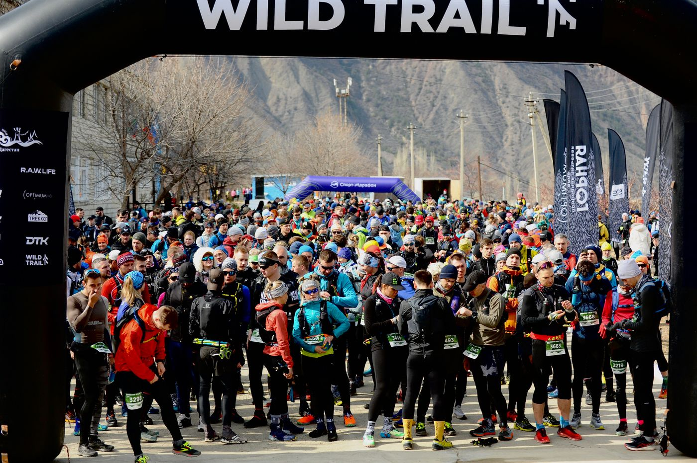
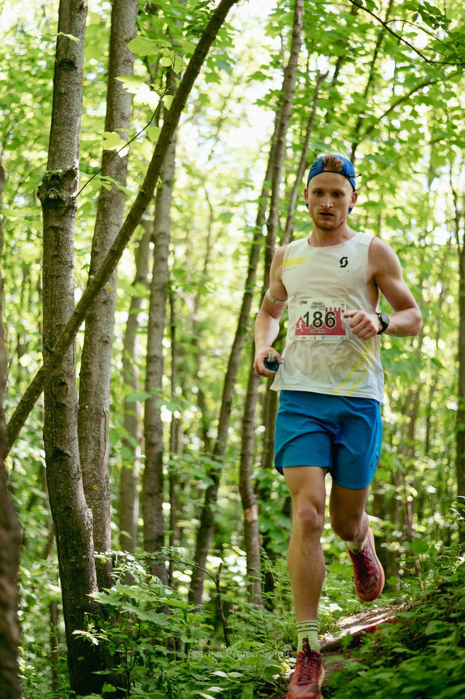
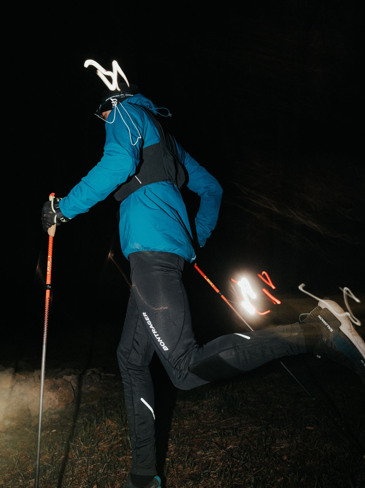
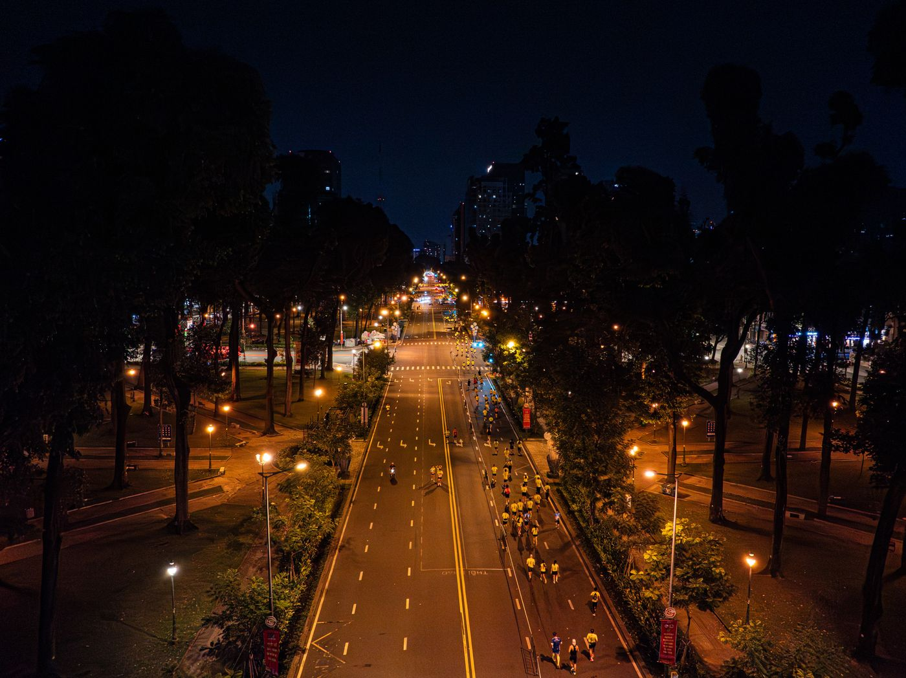
Loop 0 doneSaturday, 7:00 AM · the first start
0OF 119
Run the race
Big’s world championship, October 2025: 72 starters, and Phil Gore won it at 114 loops. The ring counts toward 119, the world record Gore set at Dead Cow Gully in June 2025. Travel it checkpoint to checkpoint, make the night calls when they come, and stop when you would stop. Trail by day, road by night.
Race morning, a trail race start line. Illustrative photo: Dmitrii Eremin via Pexels.
Loops04.167 miles each
Miles0.0100 miles at loop 24
Runners left72at the last reported checkpoint
Heart rate, same pace126 bpm
Illustrative model, built from the studies below.
How hard it feels, 6 to 209.7
Illustrative model, from the Belgian study. Your night calls move this one.
Hours since real sleep0 hours
Illustrative model. Banked naps buy some of this back, never all of it. Playbook below.
Field
72 starters on the line. Nobody has run a loop yet.
The call
Get to the first checkpoint. Every decision in this race is made one hour at a time.
The evidence
The machine runs on the studies below: Belgian race physiology, Suffolk sleep and cognition work, and the reported checkpoints of the 2025 championship.
Checkpoints
A night call
The record holder banks sleep on nights like this: faster loops, then a short nap. Your call:
The whistle blows at the top of every hour. Three whistles, then two, then one, then the bell. Advance to loop 1 to begin.
Your race
Milestones · loops
24 · 100 miles48 · two days72 · three days95 · Perry's record108 · Lewis, 2023114 · Gore wins Big’s championship, 2025119 · world record, Dead Cow Gully, 2025You
That is the whole race at its checkpoints, from the real 2025 results: the field, the call, and the evidence at each one. What follows is what the checkpoints cannot show: why the runner who stops one loop early still gets nothing.
Why second place is a DNF
A trail race start line. All but one of these runners would score a DNF. Illustrative photo: Dmitrii Eremin via Pexels.
Most races measure speed over a fixed distance. This one has none. The winner runs one more loop than anyone else, alone. The second longest is the assist, and the results record the assist as a DNF.
In 2023, Ihor Verys of Ukraine ran 107 loops, 445.83 miles in four and a half days, then stopped on loop 108. Harvey Lewis ran it alone and won. Verys: the assist, and a DNF.
In 2014 the last two both stopped after 49 loops, one to catch a flight home to Sweden. Nobody ran one more, so the race had no winner: about 200 miles each, zero finishers.
And when Gore set the world record in June 2025, Sam Harvey ran 118 loops beside him: 491.67 miles, a DNF for all of it. The mark has moved since: in October 2026, at the World Team Championship in Belgium, Merijn Geerts and Ivo Steyaert each completed 124 loops, 516.67 miles, and stopped together, so that race had no winner and the 124 sits at the top of the world rankings as a team mark, not an individual record.
124 loops516.67 miles. Merijn Geerts and Ivo Steyaert, World Team Championship, Belgium, October 2026. Stopped together; no winner.
119 loops495.8 miles. Phil Gore, world record, Dead Cow Gully, Australia, June 2025. Assist: Sam Harvey, 118. The prior mark.
116 loopsMateusz Wrobel, May 2025.
114 loopsGore wins the Big’s world championship, October 2025. Assist: Ivo Steyaert, 113. Lewis and Noll reached 111.
108 loopsLewis wins Big's 2023. Assist: Verys, 107, a DNF at 445.83 miles.
95 loops395.8 miles. Sarah Perry, women's record, Big's, October 2025. Katarzyna Eckert: 92.
74 · 68Jennifer Russo ran 74 loops in 2023. Courtney Dauwalter ran 68 in 2020.
The same loop costs more every hour
Hold a steady pace and your heart quietly charges more for it: cardiovascular drift. It starts about 10 minutes in: each beat pumps a little less blood (a drop called stroke volume), so the heart beats faster to make it up. In lab heat, the same effort cost 15 extra beats per minute after 45 minutes, 14 extra after an hour of cycling.
At a backyard ultra in Belgium in 2023, 12 runners averaged about 34 laps each. They answered the drift by slowing down. Heart rates barely moved. The cost moved into how hard the running felt:
Heart rate
Beats per minute, by quarter of each runner's race
126 → 121 bpm
How hard it felt
Effort rating, 6 to 20 scale, same quarters
9.7 → 16.0 of 20
9.0 → 7.5Speed in km/h, start to finish, Belgian race
126 → 121Heart rate in bpm. It stayed flat because they slowed
35 lapsStop before 35 laps and the drift showed. Past 35, it did not
Past 35 laps, runners needed no extra heart rate for the same speed late on. Stoppers did. The researchers call that gap physiological resilience, and it separated the field better than speed.
Sleep is the real race
Horizontal is a strategy. Sleep only exists between loops. Illustrative photo: Kaybee Photography via Pexels.
There is no night off. Sleep exists only between finishing a loop and the next start, so the best runners plan it like pit stops.
The record holder's system
Phil Gore: three faster night loops to bank time, a micro-nap of 15 to 20 minutes, then one slower loop to eat and reset. About 2 to 2.5 hours a night, in scraps. Miss it, he says, and the night gets loopy.
The teacher's four-minute naps
Harvey Lewis, a high school teacher from Ohio, has won Big's twice. His 2021 win: 85 loops at 50:18 a loop, naps of about 4 minutes at night. His 2023 win, 108 loops: eye mask, earplugs, slow breathing, asleep for a minute or two between loops by night four. He started that race on 3 hours of sleep.
Sleep loss does not weaken the body first. In the sleep-loss experiments reviewed in 1989, 30 to 72 hours awake left strength, aerobic capacity, and the heart's response largely intact on average. What fell was time to exhaustion.
Thinking goes too. After runners quit at the Suffolk backyard ultra, choice reaction time had slowed by 77 milliseconds and mental flexibility was worse; planning held up. Better pre-race sleep meant a smaller drop (r = 0.61 to 0.64). A Belgian vigilance test slowed from 243 to 283 milliseconds.
The rest is runner reported, never measured: Lewis saw figures he called grass people at a race in Australia, and caught himself talking gibberish on day four at Big's in 2023. Stories, not data.
Patience beats speed
This race cannot even see speed: the slowest loop that beats the hour counts the same as the fastest. What is left is a stranger set of skills. A quiet heart. Four-minute naps, waking on a whistle. Eating when eating is the last thing you want. First race: 18 loops, 2011. The top of the rankings is 124 now, a team championship mark from October 2026, still climbing, and second place will keep running almost all of it for the same three letters. That is the race.
Sources
De Pauw K, et al. Backyard running: pushing the boundaries of human performance. European Journal of Sport Science. 2024. Twelve experienced runners tracked through a full backyard ultra in Kasterlee, Belgium: heart rate, speed, effort, and reaction time.
Benchetrit S, et al. The effects of sleep deprivation and extreme exertion on cognitive performance at the world-record breaking Suffolk Back Yard Ultra-marathon. PLoS ONE. 2024.
Wingo JE, Ganio MS, Cureton KJ. Cardiovascular drift during heat stress: implications for exercise prescription. Exercise and Sport Sciences Reviews. 2012.
Stone T, et al. Metabolic heat production modulates the cardiovascular drift relationship independent of aerobic fitness in women. Medicine & Science in Sports & Exercise. 2025.
Van Helder T, Radomski MW. Sleep deprivation and the effect on exercise performance. Sports Medicine. 1989. A review of the sleep-loss experiments.
iRunFar. 2023 Big Dog's Backyard Ultra results; A Different Mode: an interview with Harvey Lewis after his 2023 win; 2025 Big Dog's Backyard Ultra pace analysis, drawn from the official Race Result data.
Bitter Z. Episode 502: Backyard Ultra Records and Recovery, with Phil Gore. Human Performance Outliers podcast, episode notes. 2026. Gore's sleep system in his own routine.
Guinness World Records. Most laps completed in a backyard ultramarathon: 119, Phil Gore, 2025; and the female record: 95, Sarah Perry, 2025.
Trail Runner Magazine. Harvey Lewis runs 354.2 miles at Big Dog's Backyard Ultra. 2021. The 85-loop win and the four-minute naps.
UltraRunning Magazine. Ultra Weekend Recap, October 26, 2025, and the Big's 2025 feature. Final totals for the 2025 championship.
Photos
Start line (machine, section, card): Dmitrii Eremin via Pexels, Pexels License.
Day loop, forest trail: Alin Serban via Pexels, Pexels License.
Dusk silhouette: Taiye Salawu via Pexels, Pexels License.
Night trail, headlamp: Tomasz Mastalerz via Pexels, Pexels License.
Night road marathon: VANNGO Ng via Pexels, Pexels License.
Dawn silhouette: Dom Gould via Pexels, Pexels License.
Resting runner: Kaybee Photography via Pexels, Pexels License.
A note on the loop machine: the runners-left counter shows the field at the most recent reported checkpoint from the 2025 Big’s results (72 starters; at least 25 finished 72 loops; 10 finished 95; 4 finished 111; 2 finished 113; the winner finished 114) and holds there between checkpoints, because the field is not reported between checkpoints. The heart-rate, effort, and sleep readouts are models, built from the measured values in the studies above. The photos are illustrative of the format and do not show Big's itself. Hallucination stories are reported by the runners themselves, not measured.